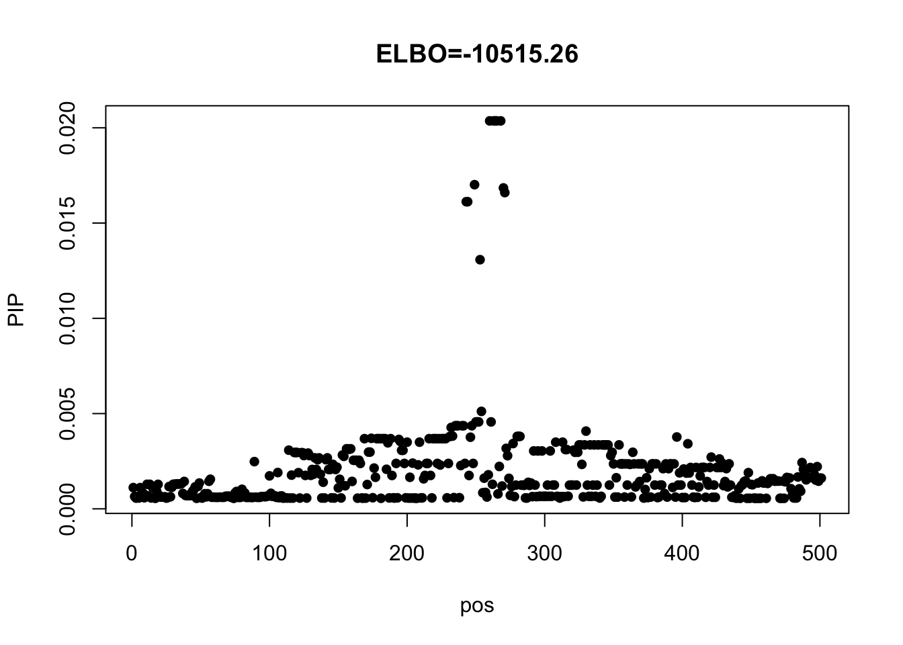
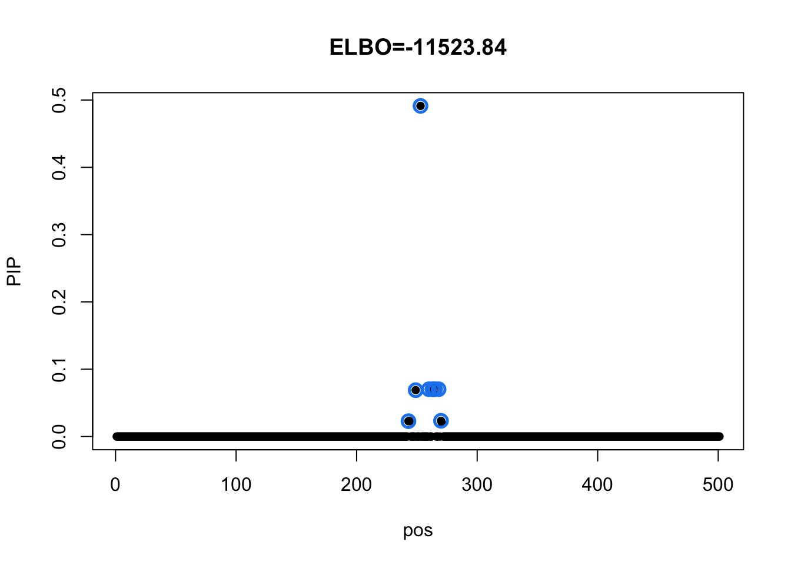
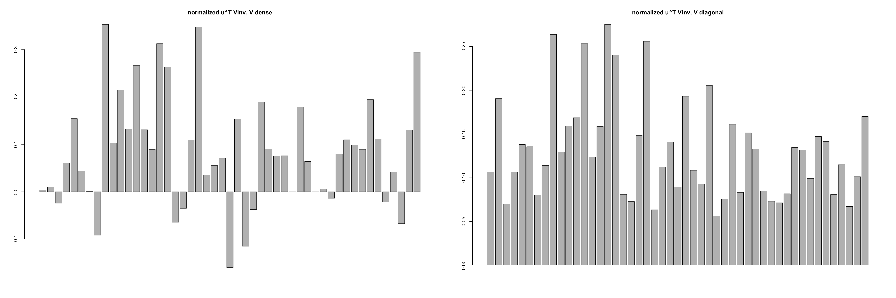

Last updated: 2020-11-10
Checks: 7 0
Knit directory: mmbr-rss-dsc/
This reproducible R Markdown analysis was created with workflowr (version 1.6.2). The Checks tab describes the reproducibility checks that were applied when the results were created. The Past versions tab lists the development history.
Great! Since the R Markdown file has been committed to the Git repository, you know the exact version of the code that produced these results.
Great job! The global environment was empty. Objects defined in the global environment can affect the analysis in your R Markdown file in unknown ways. For reproduciblity it's best to always run the code in an empty environment.
The command set.seed(20200227) was run prior to running the code in the R Markdown file. Setting a seed ensures that any results that rely on randomness, e.g. subsampling or permutations, are reproducible.
Great job! Recording the operating system, R version, and package versions is critical for reproducibility.
Nice! There were no cached chunks for this analysis, so you can be confident that you successfully produced the results during this run.
Great job! Using relative paths to the files within your workflowr project makes it easier to run your code on other machines.
Great! You are using Git for version control. Tracking code development and connecting the code version to the results is critical for reproducibility.
The results in this page were generated with repository version 3322617. See the Past versions tab to see a history of the changes made to the R Markdown and HTML files.
Note that you need to be careful to ensure that all relevant files for the analysis have been committed to Git prior to generating the results (you can use wflow_publish or wflow_git_commit). workflowr only checks the R Markdown file, but you know if there are other scripts or data files that it depends on. Below is the status of the Git repository when the results were generated:
Ignored files:
Ignored: .DS_Store
Ignored: .Rhistory
Ignored: .Rproj.user/
Ignored: output/.DS_Store
Untracked files:
Untracked: code/mvsusie.R
Untracked: data/ENSG00000140265.12.Multi_Tissues.rds
Untracked: data/FastQTLSumStats.mash.FL_PC3.rds
Untracked: output/.mmbr_gtex_res.Rprof.swp
Untracked: output/GTExprofile_res.rds
Untracked: output/GTExprofile_resL1.rds
Untracked: output/GTExprofile_resL1_elbo.rds
Untracked: output/GTExprofile_resL3.rds
Untracked: output/GTExprofile_resL3_elbo.rds
Untracked: output/GTExprofile_res_elbo.rds
Untracked: output/GTExprofile_resapprox.rds
Untracked: output/GTExprofile_resapproxL1.rds
Untracked: output/GTExprofile_resapproxL1_elbo.rds
Untracked: output/GTExprofile_resapproxL3.rds
Untracked: output/GTExprofile_resapproxL3_elbo.rds
Untracked: output/GTExprofile_resapprox_elbo.rds
Untracked: output/GTExprofile_resapproxdiag.rds
Untracked: output/GTExprofile_resapproxdiagL1.rds
Untracked: output/GTExprofile_resapproxdiagL1_elbo.rds
Untracked: output/GTExprofile_resapproxdiagL3.rds
Untracked: output/GTExprofile_resapproxdiagL3_elbo.rds
Untracked: output/GTExprofile_resapproxdiag_elbo.rds
Untracked: output/GTExprofile_resdiag.rds
Untracked: output/mmbr_gtex_res.Rprof
Untracked: output/mmbr_gtex_res_approx.Rprof
Untracked: output/mmbr_gtex_res_approx_diag.Rprof
Untracked: output/mmbr_gtex_res_diag.Rprof
Untracked: output/mnm_missing_output.20200527.rds
Untracked: output/test
Untracked: output/tiny_data_211_cond2L2.gif
Untracked: output/tiny_data_211_cond2L2.pdf
Untracked: output/tiny_data_211_cond2L3.gif
Untracked: output/tiny_data_211_cond2L3.pdf
Untracked: output/tiny_data_211_cond2initL3.gif
Untracked: output/tiny_data_211_cond2initL3.pdf
Unstaged changes:
Modified: analysis/mmbr_missing_rss_problem1.Rmd
Note that any generated files, e.g. HTML, png, CSS, etc., are not included in this status report because it is ok for generated content to have uncommitted changes.
These are the previous versions of the repository in which changes were made to the R Markdown (analysis/GTExprofileProblem2.Rmd) and HTML (docs/GTExprofileProblem2.html) files. If you've configured a remote Git repository (see ?wflow_git_remote), click on the hyperlinks in the table below to view the files as they were in that past version.
| File | Version | Author | Date | Message |
|---|---|---|---|---|
| Rmd | 3322617 | zouyuxin | 2020-11-10 | wflow_publish("analysis/GTExprofileProblem2.Rmd") |
We further investigate the BF for imputed data here. We fit model with L = 1 and a simple rank 1 prior. We don't estimate prior scalar.
Load data and impute missing data.
library(mmbr)Loading required package: mashrLoading required package: ashrLoading required package: susieRdat = readRDS('data/ENSG00000140265.12.Multi_Tissues.problem.rds')
Ymean = colMeans(dat$Y, na.rm=T)
Y = t(t(dat$Y) - Ymean)
Y[is.na(Y)] = 0Model with dense residual varaince
u = rep(1,49)
U = tcrossprod(u)
m = mmbr::msusie(dat$X, Y, prior_variance = U, residual_variance = dat$residual_var, L = 1, compute_objective = T, estimate_prior_variance = FALSE)
susie_plot(m, y='PIP', main=paste0('ELBO=', round(m$elbo[m$niter],2)))
Model with diagonal residual variance
m_diag = mmbr::msusie(dat$X, Y, prior_variance = U, residual_variance = diag(diag(dat$residual_var)), L = 1, compute_objective = T, estimate_prior_variance = FALSE)
susie_plot(m_diag, y='PIP', main=paste0('ELBO=', round(m_diag$elbo[m_diag$niter],2)))
Check CS details:
m_diag$sets$cs
$cs$L1
[1] 243 249 253 260 263 264 265 268 270
$purity
min.abs.corr mean.abs.corr median.abs.corr
L1 0.9458794 0.9857346 0.9962252
$cs_index
[1] 1
$coverage
[1] 0.95Suppose there is only one SNP with non-zero effect, \[ \mathbf{y}_i \sim N_R( x_i \mathbf{b}, V) \quad \mathbf{b} \sim N_R(0, \mathbf{u}\mathbf{u}^\intercal) \] Let \(z \sim N(0, 1)\), then \(\mathbf{b} = z \mathbf{u}\). The model becomes \[ \mathbf{y}_i \sim N_R( x_i z \mathbf{u}, V) \quad z \sim N(0,1) \] The BF for comparing this model with the null model (z = 0) is \[ BF = (1 + \mathbf{u}^\intercal V^{-1} \mathbf{u} \sum_{i=1}^{N} x_i^2 )^{1/2} \exp\{\frac{1}{2} \frac{(\mathbf{u}^\intercal V^{-1} \sum_{i=1}^N x_i \mathbf{y}_i)^2}{1 + \mathbf{u}^\intercal V^{-1} \mathbf{u} \sum_{i=1}^{N} x_i^2 } \} \]
The difference in \(V^{-1}\) is
summary(as.vector(solve(dat$residual_var) - diag(1/diag(dat$residual_var)))) Min. 1st Qu. Median Mean 3rd Qu. Max.
-0.38050 -0.12217 -0.08411 -0.08261 -0.05275 1.99170 In our example, \(u^T V^{-1} u =\) 77.89 when V is dense; \(u^T V^{-1} u =\) 276.23 when V is diagonal.
par(mfrow=c(1,2))
{barplot(colSums(solve(dat$residual_var))/sqrt(sum(colSums(solve(dat$residual_var))^2)), main = 'normalized u^T Vinv, V dense')
barplot((1/diag(dat$residual_var))/sqrt(sum((1/diag(dat$residual_var))^2)), main = 'normalized u^T Vinv, V diagonal')}
The difference in results may caused by the difference in the inverse of residual variance matrix.
# # BF
# compute_bf = function(X, Y, u, residual_var){
# J = ncol(X)
# Y = t(t(Y) - colMeans(Y))
# X = scale(X)
# d = colSums(X^2)
# resid_inv = solve(residual_var)
# XtY = crossprod(X, Y)
# lbf = numeric(J)
# numerator = numeric(J)
# for(j in 1:J){
# numerator[j] = (crossprod(u, resid_inv %*% XtY[j,]))^2
# lbf[j] = 0.5 * log(1 + crossprod(u, resid_inv %*% u) * d[j]) + 0.5 * ((crossprod(u, resid_inv %*% XtY[j,]))^2) / (1 + crossprod(u, resid_inv %*% u) * d[j] )
# }
# return(list(lbf = lbf, numerator = numerator))
# }
#
# compute_softmax = function(value) {
# mvalue = max(value)
# w = exp(value-mvalue)
# return(as.vector(w / sum(w)))
# }
#
# lbf_covy = compute_bf(dat$X, Y, u, residY)
# lbf_diag = compute_bf(dat$X, Y, u, diag(diag(residY)))
sessionInfo()R version 3.6.3 (2020-02-29)
Platform: x86_64-apple-darwin15.6.0 (64-bit)
Running under: macOS Catalina 10.15.7
Matrix products: default
BLAS: /Library/Frameworks/R.framework/Versions/3.6/Resources/lib/libRblas.0.dylib
LAPACK: /Library/Frameworks/R.framework/Versions/3.6/Resources/lib/libRlapack.dylib
locale:
[1] en_US.UTF-8/en_US.UTF-8/en_US.UTF-8/C/en_US.UTF-8/en_US.UTF-8
attached base packages:
[1] stats graphics grDevices utils datasets methods base
other attached packages:
[1] mmbr_0.0.1.0305 susieR_0.9.26 mashr_0.2.40 ashr_2.2-51
[5] workflowr_1.6.2
loaded via a namespace (and not attached):
[1] progress_1.2.2 tidyselect_1.1.0 xfun_0.19 purrr_0.3.4
[5] lattice_0.20-41 colorspace_1.4-1 vctrs_0.3.4 generics_0.1.0
[9] htmltools_0.5.0 yaml_2.2.1 rlang_0.4.8 mixsqp_0.3-46
[13] later_1.1.0.1 pillar_1.4.6 glue_1.4.2 matrixStats_0.57.0
[17] lifecycle_0.2.0 plyr_1.8.6 stringr_1.4.0 munsell_0.5.0
[21] gtable_0.3.0 mvtnorm_1.1-1 evaluate_0.14 knitr_1.30
[25] httpuv_1.5.4 invgamma_1.1 irlba_2.3.3 Rcpp_1.0.5
[29] promises_1.1.1 backports_1.2.0 scales_1.1.1 rmeta_3.0
[33] truncnorm_1.0-8 abind_1.4-5 fs_1.5.0 hms_0.5.3
[37] ggplot2_3.3.2 digest_0.6.27 stringi_1.5.3 dplyr_1.0.2
[41] grid_3.6.3 rprojroot_1.3-2 tools_3.6.3 magrittr_1.5
[45] tibble_3.0.4 crayon_1.3.4 whisker_0.4 pkgconfig_2.0.3
[49] ellipsis_0.3.1 Matrix_1.2-18 prettyunits_1.1.1 SQUAREM_2020.5
[53] reshape_0.8.8 assertthat_0.2.1 rmarkdown_2.5 rstudioapi_0.11
[57] R6_2.5.0 git2r_0.27.1 compiler_3.6.3